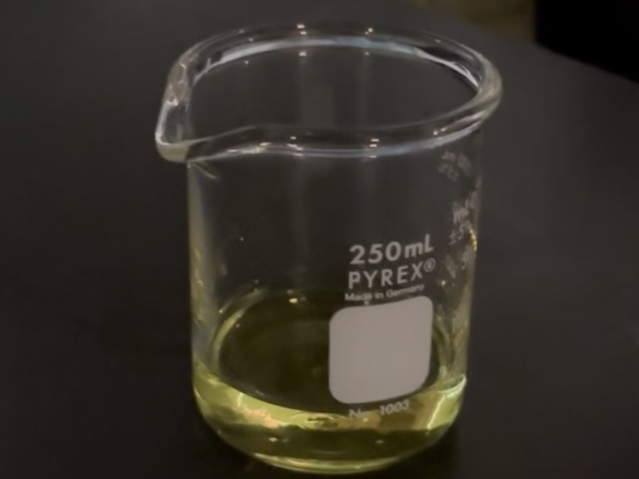
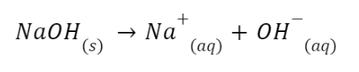
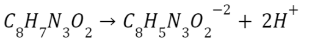
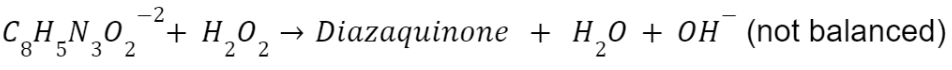
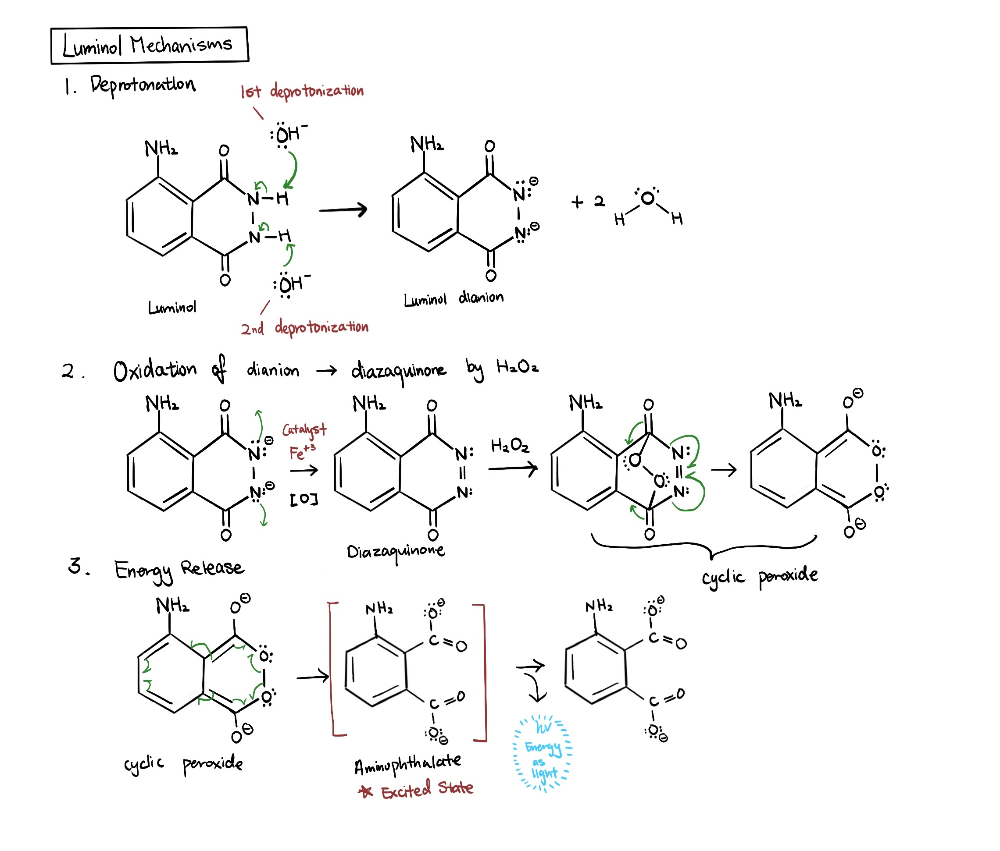
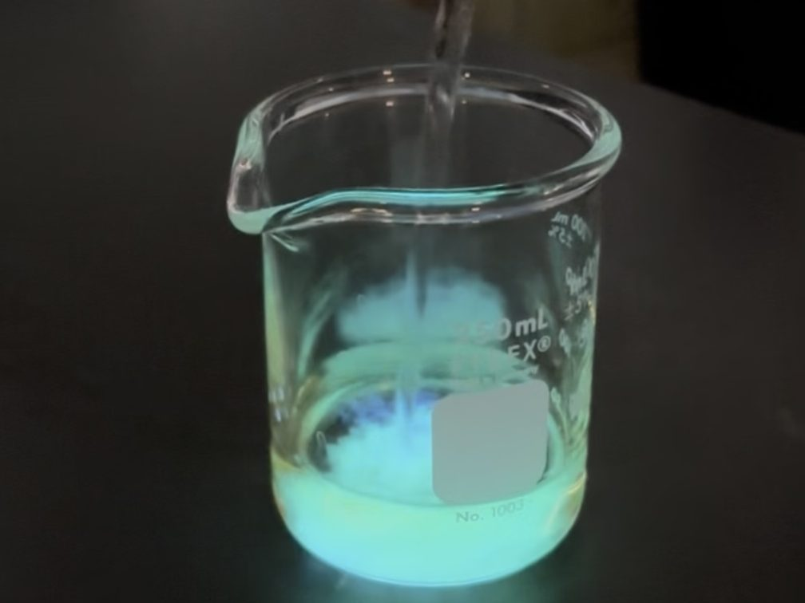

Who would have thought the key to solving mysteries comes is a chemical? Luminol, with the formula, C8H7N3O2, is the secret to forensic sciences. It allows us to see traces blood even after they are erased. Keep reading to discover how vanished evidence can be resurfaced.
Background Information
Chemiluminescence is the light released from a chemical reaction in the form of photons (Khan et al., 2014). Luminol is a type of chemiluminescence agent, which is used in forensics, biomedical, and clinical sciences. It is often used to detect blood traces and conduct assays by detecting macromolecules and emitting a blue light. It is a cheap agent, but also very effective due to its sensitivity to oxidation.
Purpose
The objective of the lab is to demonstrate chemiluminescence and explore mechanisms behind luminol oxidation.
Materials
2 beakers
K3[Fe(CN)6] (potassium ferricyanide)
3% hydrogen peroxide
Luminol
Distilled water
Stirring rod (or equivalent)
Safety Note
Wear lab safety googles as some chemicals may be poisonous.
Conduct the following procedure under supervision.
Experimental Procedure
Solution A and B will be prepared
Solution A: Add 50 mL distilled water, add 1 g NaOH, add 0.2 g luminol, and stir until fully/mostly dissolved
Solution B: Add 50 mL distilled water, add 5 mL 3% hydrogen peroxide, add 0.2g potassium ferricyanide, and stir until fully/mostly dissolved
Pour Solution A and B together

How Does This Work?
Since the luminol chemiluminescence works the best at approximately pH 8-9, NaOH is used to create a slightly basic environment. NaOH deprotonates luminol's nitrogen atom (C8H7N3O2), creating a dianion, which is a molecule with two negative charges. In this stage, the luminol dianion can be easily oxidized due to its instability.
In the above redox reaction, H2O2 acts as the oxidizing agent that oxidizes the dianion by accepting electrons. The product diazaquinone cyclizes and decomposes to release Nâ‚?and 3-aminophthalate, which is a molecule in excited states. As 3-aminophthalate relaxes back to the ground state, energy is released in the form of light to create a blue chemiluminescence glow.
Throughout the reaction, K3[Fe(CN)6] serves as a catalyst for the reaction, lowering the activation energy for the process to occur. Therefore, the reaction rate increases, so we can see the glow faster!
As reactants are consumed and the transition from excited to ground state is very short, this is also why the reaction only last for a couple of seconds!




Further Explorations
You can also try changing the catalyst to find out if reaction rate changes. In other words, does it last longer with another metal as catalyst? Also, does the pH condition matter, or does it perform the best at pH 8-9?

Acknowledgement
Experimentation was conducted with my school’s chemistry club.
Citations
Khan, P., Idrees, D., Moxley, M. A., Corbett, J. A., Ahmad, F., von Figura, G., Sly, W. S., Waheed, A., & Hassan, M. I. (2014). Luminol-based chemiluminescent signals: clinical and non-clinical application and future uses. Applied biochemistry and biotechnology, 173(2), 333-355. https://doi.org/10.1007/s12010-014-0850-1